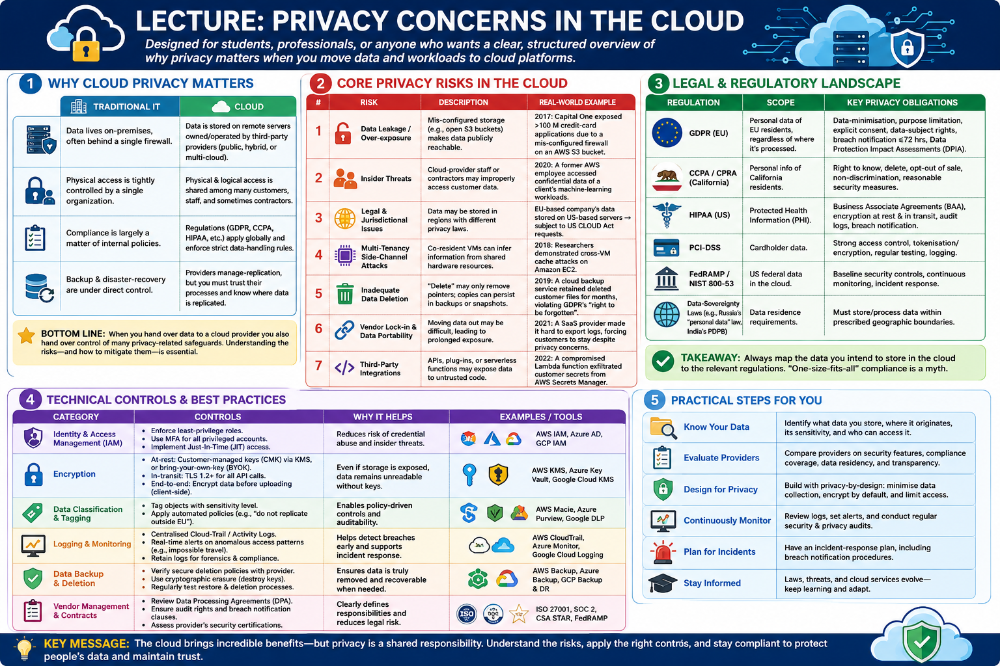

Lecture: Privacy Concerns in the Cloud

{kind=link}
1. Why Cloud Privacy Matters
| Traditional IT | Cloud |
|---|---|
| Data lives on‑premises, often behind a single firewall. | Data is stored on remote servers owned/operated by third‑party providers (public, hybrid, or multi‑cloud). |
| Physical access is tightly controlled by a single organization. | Physical & logical access is shared among many customers, staff, and sometimes contractors. |
| Compliance is largely a matter of internal policies. | Regulations (GDPR, CCPA, HIPAA, etc.) apply globally and enforce strict data‑handling rules. |
| Backup & disaster‑recovery are under direct control. | Providers manage replication, but you must trust their processes and know where data is replicated. |
Bottom line: When you hand over data to a cloud provider you also hand over control of many privacy‑related safeguards. Understanding the risks—and how to mitigate them—is essential.
2. Core Privacy Risks in the Cloud
| # | Risk | Description | Real‑World Example |
|---|---|---|---|
| 1 | Data Leakage / Over‑exposure | Mis‑configured storage (e.g., open S3 buckets) makes data publicly reachable. | 2017: Capital One exposed >100 M credit‑card applications due to a mis‑configured firewall on an AWS S3 bucket. |
| 2 | Insider Threats | Cloud‑provider staff or contractors may improperly access customer data. | 2020: A former AWS employee accessed confidential data of a client’s machine‑learning workloads. |
| 3 | Legal & Jurisdictional Issues | Data may be stored in regions with different privacy laws. | EU‑based company’s data stored on US‑based servers → subject to US CLOUD Act requests. |
| 4 | Multi‑Tenancy Side‑Channel Attacks | Co‑resident VMs can infer information from shared hardware resources. | 2018: Researchers demonstrated cross‑VM cache attacks on Amazon EC2. |
| 5 | Inadequate Data Deletion | “Delete” may only remove pointers; copies can persist in backups or snapshots. | 2019: A cloud backup service retained deleted customer files for months, violating GDPR’s “right to be forgotten”. |
| 6 | Vendor Lock‑in & Data Portability | Moving data out may be difficult, leading to prolonged exposure. | 2021: A SaaS provider made it hard to export logs, forcing customers to stay despite privacy concerns. |
| 7 | Third‑Party Integrations | APIs, plug‑ins, or serverless functions may expose data to untrusted code. | 2022: A compromised Lambda function exfiltrated customer secrets from AWS Secrets Manager. |
3. Legal & Regulatory Landscape
| Regulation | Scope | Key Privacy Obligations |
|---|---|---|
| GDPR (EU) | Personal data of EU residents, regardless of where it’s processed. | Data‑minimisation, purpose limitation, explicit consent, data‑subject rights, breach notification ≤72 hrs, Data Protection Impact Assessments (DPIA). |
| CCPA / CPRA (California) | Personal info of California residents. | Right to know, delete, opt‑out of sale, non‑discrimination, reasonable security measures. |
| HIPAA (US) | Protected Health Information (PHI). | Business Associate Agreements (BAA), encryption at rest & in transit, audit logs, breach notification. |
| PCI‑DSS | Cardholder data. | Strong access control, tokenisation/encryption, regular testing, logging. |
| FedRAMP / NIST 800‑53 | US federal data in the cloud. | Baseline security controls, continuous monitoring, incident response. |
| Data‑Sovereignty Laws (e.g., Russia’s “personal data” law, India’s PDPB) | Data residence requirements. | Must store/process data within prescribed geographic boundaries. |
Takeaway:
Always map the data you intend to store in the cloud to the relevant regulations. “One‑size‑fits‑all” compliance is a myth.
4. Technical Controls & Best Practices
| Category | Controls | Why It Helps |
|---|---|---|
| Identity & Access Management (IAM) | - Enforce least‑privilege roles. - Use MFA for all privileged accounts. - Implement Just‑In‑Time (JIT) access. |
Reduces risk of credential abuse and insider threats. |
| Encryption | - At‑rest: Customer‑managed keys (CMK) via KMS, or bring‑your‑own‑key (BYOK). - In‑transit: TLS 1.2+ for all API calls. - End‑to‑end: Encrypt data before uploading (client‑side). |
Even if storage is exposed, data remains unreadable without keys. |
| Data Classification & Tagging | - Tag objects with sensitivity level. - Apply automated policies (e.g., “do not replicate outside EU”). |
Enables policy‑driven controls and auditability. |
| Logging & Monitoring | - Centralised Cloud‑Trail / Activity Logs. - Real‑time alerts on anomalous access patterns (e.g., impossible travel). - Retain logs for the period required by law. |
Early detection of breaches and evidence for forensic investigations. |
| Network Segmentation | - Use VPCs, sub‑nets, and security groups. - Deploy private endpoints for storage services. - Zero‑trust micro‑segmentation. |
Limits lateral movement and reduces exposure surface. |
| Automated Configuration Checks | - IaC linting (Terraform, CloudFormation) with policies (e.g., Checkov, AWS Config Rules). - Continuous compliance scans. |
Prevents mis‑configurations that lead to data leakage. |
| Backup & Deletion Hygiene | - Verify that backups are encrypted and isolated. - Use “secure erase” APIs or lifecycle policies that purge data after retention. |
Guarantees the “right to be forgotten” and reduces stale data risk. |
| Third‑Party Governance | - Conduct security assessments of SaaS add‑ons. - Require contractual clauses for data handling and breach notification. |
Controls risk introduced by external code or services. |
5. Architectural Patterns that Preserve Privacy
- Data‑in‑Use Encryption (Confidential Computing)
- Use Trusted Execution Environments (Intel SGX, AMD SEV, Azure Confidential VMs) to keep data encrypted while being processed.
-
Ideal for sensitive analytics (e.g., genomics, financial modeling).
-
Zero‑Knowledge (Client‑Side) Encryption
- Encrypt data on the client before upload; provider never sees plaintext or decryption keys.
-
Suitable for backups, file‑sharing services, or storing PII.
-
Hybrid Cloud with Data‑Residency Controls
- Keep regulated data on‑premises or in a private cloud; only move non‑sensitive workloads to public clouds.
-
Use secure VPN or dedicated interconnects for data flow.
-
Multi‑Cloud Redundancy with Policy‑Based Routing
- Store copies in two clouds that satisfy differing jurisdictional requirements (e.g., EU + APAC).
-
Enforce routing policies that direct requests based on user location.
-
Serverless with Scoped Permissions
- Grant each function only the minimum set of secret/permissions it needs (principle of least privilege).
- Use secret‑management services that rotate keys automatically.
6. Risk‑Assessment Workflow (Step‑by‑Step)
- Identify Data Assets – inventory all data, classify by sensitivity, and note regulatory constraints.
- Map Cloud Services – list every SaaS/IaaS/PaaS component that will touch those assets.
- Threat Modelling – use STRIDE (Spoofing, Tampering, Repudiation, Information disclosure, Denial‑of‑service, Elevation of privilege) to enumerate possible attacks.
- Control Gap Analysis – compare existing controls (encryption, IAM, monitoring) against required controls from regulations and internal policies.
- Mitigation Planning – prioritize gaps by risk (likelihood × impact) and assign remediation (e.g., re‑configure bucket ACLs, enable CMEK).
- Implementation & Automation – codify controls as Infrastructure‑as‑Code (IaC) and integrate with CI/CD pipelines.
- Continuous Monitoring & Auditing – set up dashboards, KPI alerts (e.g., “public bucket detected”), and periodic compliance reviews.
7. Case Study Snapshot
Company: FinTechCo (global payments provider)
Challenge: Must store EU customer transaction logs while complying with GDPR and PCI‑DSS.
| Action | How It Addressed Privacy |
|---|---|
| Data Residency – Deployed Azure Region “West Europe” and used Azure Private Link for storage. | Guarantees data never leaves EU; avoids US CLOUD‑Act requests. |
| Customer‑Managed Keys (CMK) – Integrated Azure Key Vault with BYOK. | Only FinTechCo holds the master key; Azure cannot decrypt data. |
| Immutable Logs – Enabled Azure Append‑only blobs with legal hold for 7 years. | Satisfies PCI‑DSS retention and prevents tampering. |
| Confidential Computing – Ran analytics workloads on Azure Confidential VMs. | Data stays encrypted even during processing. |
| Automated Compliance Scans – Deployed Azure Policy + Checkov in CI/CD. | Blocks any deployment that would expose logs publicly. |
| Incident‑Response Playbook – Integrated CloudTrail logs with SIEM and set up automated alerts for anomalous access. | Guarantees breach detection within minutes, meeting GDPR 72‑hour notification rule. |
Result: Achieved full GDPR & PCI‑DSS compliance, passed external audit with zero findings and reduced the risk of data leakage by >90 % (as measured by control‑coverage metrics).
8. Key Take‑aways
| ✅ | Take‑away |
|---|---|
| Know Where Your Data Lives – Use tagging, inventory tools, and data‑residency policies. | |
| Encrypt Early, Keep Control of Keys – Prefer customer‑managed or BYOK solutions. | |
| Treat Configuration as Code – IaC + policy‑as‑code prevents human error. | |
| Monitor Continuously – Real‑time alerts and immutable logs are non‑negotiable. | |
| Understand Legal Jurisdictions – Cloud providers may store copies in multiple regions; you must be able to prove compliance. | |
| Plan for Deletion – Secure wipe and lifecycle policies must be part of the design, not an after‑thought. | |
| Include the Provider in Your Risk Management – Review SLAs, BAA/BAAs, and audit reports (SOC 2, ISO 27001). | |
| Educate Users – Even the best technical controls fail without staff awareness of phishing, credential reuse, and secure coding. |
9. Quick Quiz (Self‑Check)
- True or False: Enabling encryption at rest on a cloud storage bucket automatically satisfies GDPR’s “right to be forgotten”.
- Which attack vector exploits shared CPU caches in a multi‑tenant environment?
a) SQL injection b) Side‑channel cache attack c) Man‑in‑the‑middle d) Phishing - What is the primary benefit of “customer‑managed keys” (CMK) over provider‑managed encryption?
- Name two regulatory frameworks that impose data‑at‑rest encryption requirements.
Answers:
1. False – Encryption protects confidentiality but does not guarantee that data is fully erased when requested.
2. b) Side‑channel cache attack
3. Control: Only the customer holds the master key, so the provider cannot decrypt data without the customer’s explicit consent.
4. GDPR (via national implementations) and PCI‑DSS (require encryption of cardholder data at rest).
10. Further Resources
| Format | Link | Description |
|---|---|---|
| Guidelines | https://cloudsecurityalliance.org/artifacts/ccsks/ | Cloud Controls Matrix – a comprehensive set of security controls for cloud providers. |
| Tooling | https://github.com/bridgecrewio/checkov | Open‑source IaC scanner that checks for mis‑configurations and privacy‑related risks. |
| Whitepaper | https://www.nist.gov/publications/nist-special-publication-800-144-guidelines-security-cloud-computing | NIST SP 800‑144 – “Guidelines on Security and Privacy in Public Cloud Computing”. |
| Course | https://www.coursera.org/learn/cloud-privacy-security | Coursera specialization covering cloud privacy, legal aspects, and technical controls. |
| Case Study | https://azure.microsoft.com/en-us/resources/cloud-compliance/ | Microsoft Azure compliance resources with detailed GDPR/PCI‑DSS examples. |
Closing Thought
Privacy in the cloud isn’t a single checkbox—it’s an ongoing discipline that blends legal awareness, strong architecture, automated controls, and a culture of vigilance. By embedding privacy‑by‑design from day 1 and continuously verifying your posture, you turn the cloud from a potential liability into a powerful enabler for secure, compliant innovation.